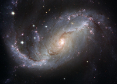

Fred Blog – Old Posts
Old posts from my grad student days, maybe one day I'll be more active at writing these again...
The problems of "flatness" and "sudden evolution" in the ionizing background
Posted on October 8th 2014 at 2:50 PM by Fred
In the interest of procrastinating on writing research statements...
My collaborator Joey Muñoz should have a new paper out on arXiv this week [Edit: arXiv link] talking about the evolution of the ionizing background. As you might be able to guess, I'm totally into it! We've been working on this project for quite some time — it originally started as a question of proximity/local source effects, but ended up turning into something even cooler.
The main problem we were looking to solve is something that people have known for at least the last few years. Essentially, given the expected relationship between ionizing photon absorbers and the strength of the ionizing radiation field, the evolution of the latter should depend very strongly on the evolution of the ionizing source population, in this case predominantly galaxies. We know that the galaxy population evolves quite a bit at high redshift, but our best estimates for the ionizing background suggest that it is almost completely constant for billions of years. That's weird!
The solution is that the absorber and source populations cannot be treated independently. The absorbers are dense enough that they should only be found inside of collapsed dark matter halos, but those halos also contain the sources (galaxies!). This co-evolution results in a much more gentle evolution of the ionizing background, consistent with observations. Compare the data points from z ~ 2–5 to the purple line below:
| Muñoz, Oh, Davies, & Furlanetto, MNRAS submitted |
But wait! Above z ~ 5, the ionizing background drops steeply while the galaxy population is still evolving smoothly. What gives? The reason is that, at high redshift when the average density of the universe is higher, absorbers do not need to exist inside of a halo. Instead, absorbers can exist out in the more tenuous IGM, where they are less directly correlated with galaxies. Thus, the original idea of steep evolution becomes the dominant factor in the evolution of the ionizing background, and a toy model calculation (red dashed line in the figure above) confirms that the observed evolution is consistent with that idea. Lovely!
Quasar ionization front Lyα paper submitted, starting the job hunt
Posted on September 2nd 2014 at 2:45 PM by Fred
Five months since my last post, yikes. Alas, there hasn't been much to report since then, except for research developments that I'm probably supposed to keep private for now. On the publically productive side, I finally finished up a paper I've been working on for ages: investigating Lyα emission from quasar ionization fronts during reionization.
People have been looking for definite clues about the nature of reionization and ionizing sources for ages. The crucial thing is to find out whether large-scale neutral IGM exists at any given epoch. That is what 21 cm observations of HI during the epoch of reionization are designed for, but due to the weak nature of the hyperfine transition they're looking for a signal many orders of magnitude below terrestrial/astrophysical foregrounds, and likely won't have a solid detection for at least a few more years (I hope they can prove me wrong, of course!). Another method was suggested by Sebastiano Cantalupo in 2008: Lyα emission from quasar ionization fronts. While quasars are not expected to produce most of the ionizing photons that reionized the universe, a handful of very high-redshift (z > 6.5) quasars have been discovered, and the conditions within the ionization front should be ideal for collisional excitation of hydrogen atoms.
The "ionization front" is the boundary between the ionized region around the quasar and the surrounding neutral IGM. This boundary is very narrow, but has a finite (and calculable) width. The key ingredients to efficiently produce collisionally excited line emission are the following: the gas must be hot enough to excite resonant transitions (from the ground state), and there should be roughly equal numbers of "exciting" particles (i.e. electrons) and neutral atoms (e.g. hydrogen). The hard ionizing spectrum of quasars heats up the gas by ~30,000 K, and the ionization front is half neutral, so there's potential for a bright, narrow (sort of) emission line signal. If one were to observe this signal on large patches of sky (~arcmin-scale), it would be possible to map out the topology of neutral regions in the vicinity of the quasar (see: Figure 2 in Cantalupo's paper). Exciting!
Cantalupo's model suggested that this Lyα emission was just barely within reach of modern telescopes (if staring at a blank patch of sky for 40 hours with a 10-meter telescope). However, his model assumed a uniform intergalactic medium, with a (commonly used) fudge factor to account for clumping. We found that, for a variety of interesting analytic reasons, the Lyα emission from a more realistic density field should behave differently, and demonstrated this with 1D radiative transfer modeling (see discussions in previous posts). Our predicted emission is substantially lower (by a factor of ~3-10) than the original prediction, so it likely will not be easily observed. Darn! We submitted the paper to MNRAS and it should show up on arXiv tomorrow evening (somewhere close to the top of the page, too, I totally nailed the submission deadline!). [Edit: arXiv link]
There are some other interesting things in the paper that I won't be able to talk about in detail in this post...it's already pretty long-winded, even though I hardly said anything about my own work! I won't bore you with the details, but there are some interesting "causal" effects from the relativistically expanding ionized region, and I came up with an analytic model that reproduces my computationally expensive radiative transfer results in ~1/1000th the computing time.
On an unrelated note, since I'm trying to graduate this (academic) year, I'm about to start visiting other institutions and give talks about my research. Fun stuff! The first talk of my (hopefully) grand tour will be UC Berkeley on September 9th, where I'm giving the Cosmology seminar. I'll be talking about pretty much everything I work on (sans side observation projects): fluctuations in the hydrogen/helium ionizing backgrounds, and the above stuff about quasar ionization front emission.
The "Photon Underproduction Crisis"
Posted on April 18th 2014 at 4:45 PM by Fred
An interesting paper by Juna Kollmeier et al. (arXiv link) went up on arXiv this week about the so-called "photon underproduction crisis" in the low redshift (z < 0.5) IGM. Essentially, observations of the IGM at low redshift suggest that there are something like 5x as many ionizing photons around than state-of-the-art models estimate there should be. Uh oh!
In detail, what they are actually comparing isn't obvious. The new observations are a survey of quasars with the HST/COS spectrograph in the far-ultraviolet by Danforth et al. (arXiv link), where the Lyman-alpha transition lies at low redshift. In the FUV spectra redward of Lyman-alpha in the rest frame of these quasars, residual neutral hydrogen in the highly ionized IGM will show up as absorption lines, which can then be counted and catalogued by neutral hydrogen column density (the so-called "column density distribution" or CDD). On the theoretical side, there are two main inputs: the ionizing radiation field, assumed to be smooth, and a cosmological/hydrodynamic simulation of large scale structure. By processing the density field with the ionizing radiation, it is then possible to have a map of the residual neutral gas along any line of sight. These sightlines were then processed through "mock" observations with HST/COS, performing the same absorption line measurement as the observations on their "fake" data.
The resulting CDDs of the observations and theory end up being wildly different, with the theoretical CDD having a factor of ~3 more absorption lines than the observations. The authors believe that the hydrodynamic simulation component of their theoretical model should be sound because the Lyman-alpha forest arises in converged regions of the IGM, so they interpret this discrepancy in terms of the radiation field: there need to be ~5 times as many ionizing photons out in the IGM than state-of-the-art ionizing background models predict. Hence, the crisis! One of their suggestions to resolve this crisis would be if star-forming galaxies at low redshift had higher than expected escape fractions of ionizing photons (relative to z ~ 2 — 4), but this doesn't seem especially likely given the current measurement constraints.
This is really exciting to me -- I had always assumed that the interesting problems with the ionizing background were exclusively at high redshift, but apparently I was wrong! I doubt I will have enough time to think about the resolution of this problem before someone else figures it out, though. During our astro-ph coffee discussion of this paper today Brad Hansen suggested that ionization by cosmic rays should be considered, but I think their contribution should be fairly minor. Regardless, it has to be something that either significantly changes the ionization balance, or significantly modifies large scale structure, and will likely have to be something rather exotic to fully solve the problem.
As a final note, Nate Ross thinks an alternative name should be the "Lyman-alpha deforestation crisis", which is awesome.
Overdue Update #2
Posted on April 7th 2014 at 2:30 PM by Fred
Yeesh, so much for updating this page on a regular basis.
The last few months have been pretty quiet. The most exciting thing that happened was that the second year grad students all passed their comprehensive exams last week. Woo! Last year was the first time in several years that we had multiple people fail, so stress levels were extremely high. But enough about them, this is my blog, not theirs!
Writing is still slow on my QSO radiative transfer paper (sound familiar?), but progress is steadily being made. After spending the last couple months settling into his new faculty job at UW, Matt finally had time to run the somewhat bizarre cosmological simulation that we needed. Huzzah! All that's left is to work out the final details and polish the rest of the paper. At some point in the next week or two I'll need to find someone who can tell me whether our predicted thing (ooh, so mysterious) will be observable with next-generation instruments. Jeff seemed to think that James would be the best bet. With any luck I should be able to submit in the next month or two. Exciting!
To spice up this entry, here's a figure from the paper showing some of the results of my RT model on a handful of sightlines:
| Davies, Furlanetto, & McQuinn in prep. |
Of course, this doesn't show off the results that the paper is actually about, but it's still pretty neat.
Overdue Update
Posted on January 15th 2014 at 7:56 PM by Fred
It's been a while since I wrote something for this blog-like thing, so I guess I should change that. Happy new year, too, I suppose.
Still having fairly awful writer's block on my radiative transfer project. It doesn't help that I'm still waiting for some cosmological simulation sightlines from Matt, but there's still some important writing I could get done without it. I have a feeling that if I could just sit down and write productively, I would probably have a respectable draft of the paper within a few days or a week. Instead, I end up dragging it out for months. Ugh. It feels like I have most of the paper swirling around in my head already, but somehow writing it down is still beyond me. I think that's something I should try to focus on this quarter: learning how to be productive and get past my apparent fear of completion.
Also on the research front this week, Peng has decided that there is a substantial problem with the local ionizing background model that Joey came up with. I won't go into specifics here, but one of our basic assumptions could be terribly wrong. I'm a little worried because my next major project was probably going to be a more indepth followup to figure out just how important local/clustered ionizing radiation should be.
In non-research news, I'm teaching a discussion section for Astro 6 this quarter! The prospect of teaching usually terrifies me, and this quarter is only partly an exception. It would otherwise be fine except that I've never had to teach to non-science majors before, so I'm still trying to figure out exactly what level I'm supposed to teach them at. Matt Malkan has a very fun and engaging teaching style, but he tends to digress often while zipping through an enormous amount of content that I'm sure many people in the class haven't ever seen before. Maybe I'll prepare some example problems for the next section...
We had some interesting discussion about the AAS meeting this morning at astro-ph coffee. Laura and Breann talked about some science (variable circumstellar disks, GPI), but primarily focused on the talk by Alyssa Goodman about data visualization and the online paper collaboration tool Authorea (link to summary on AstroBetter). I think the idea of having interactive/3D plots is interesting, but possibly could run into compatibility issues in future years (someone made a tweet about that during the meeting, but I don't remember who...). I may see if Steve is up to using Authorea for our next paper, it may help pressure me into being in a more productive mood.
Research update
Posted on December 9th 2013 at 2:29 PM by Fred
I've spent the last month or so working on, oddly enough, an ALMA proposal to look for obscured star formation in a sample of "normal" z > 6 galaxies. I had this idea earlier in the year while taking Jean Turner's ALMA/radio astronomy course, and with some encouragement from her and fellow grad Nate Ross I decided to turn it into a full-fledged proposal. I think it went pretty well, but with the high over-subscription rate of ALMA and the competitive nature of the high-redshift galaxy field, I'm not really holding my breath. Still, it would be really nice if we could get these data! I probably won't have enough time to work on it much myself, but there's a good chance we could get ALMA and/or HST funding for a student or two if the proposal is accepted. I'll be adding a little section on it to the Research page shortly. If anything, I think it was an educational experience, since I had never written a proposal before.
I gave a short talk on my quasar ionization front project at the Theoretical Astrophysics in Southern California ("TASC") meeting last Friday (my birthday!). I probably shouldn't say too much about it on here until we submit the paper, unfortunately, but I think the talk went over fairly well. I didn't win the best student talk award, but apparently I came in second place!
Meanwhile, my silly helium ionizing background side project is still consistently taking up 80% of my desktop's computing power. The basic idea is that it is a 3D extension of my previous 1D model for the ionizing background. Essentially, the only "new" bit of physics that it includes is the discrete nature of ionizing photon sources (i.e. quasars). This means that I don't have to simply average over the fluctuations like I did before, so I don't have to do any crude fixes to avoid divergence of the background once the fluctuations become very strong. In that sense, it naturally evolves from the "minimum" background model to a mostly uniform background in a reasonable manner, with the caveat that I've ignored helium reionization completely. The current preliminary results seem to suggest that helium reionization is wholly unnecessary to explain the current state of observations, which is a little bit worrying. Who knows if that even means anything...
Back to business
Posted on October 29th 2013 at 4:02 PM by Fred
After an eventful week of internet, astro-ph coffee, and research disasters, everything seems to finally be settled.
First off, I discovered this week why it's dangerous to share internet across computers: apparently, the ethernet ports in my office were getting turned off when the sharing was detected. Oops.
Next, the astro-ph coffee page died. Why did it die? The IT group switched to a new cluster of web servers that doesn't support Python. Well, crap. After attempting to rewrite the coffee page with a barebones PHP script, I instead decided to set up my office desktop as a web server to host it. Fingers crossed, everything should work now. This coincided with arXiv introducing a math/LaTeX engine into the abstract/title fields, which broke the original coffee script and required several hours to figure out why I couldn't get it to work. I figured I had just made some mistake setting it up!
Finally, on to research business. During the long process of writing my helium-ionizing background paper, I had been playing around with other toy models for fun. While my paper focuses on a modification to the standard one dimensional approach, I thought I would see what I could applying similar principles in a highly simplified three dimensional way. It turns out that the preliminary results of that model may spell doom for the nearly-finished work of a collaborator! It's not clear whether that's actually the case just yet; I basically made the code for fun, and it isn't clear what the full implications are. While working on that I also managed to confuse myself into thinking I had made a critical mistake in my just-accepted work, which would have been a nightmare to resolve, but eventually was able to figure out that I did it right the first time. Note to readers: try not use "magic numbers" in your code! A "magic number" is one that represents some prior calculation or an important constant that is written directly rather than referred to with a variable. It can cause all sorts of grief trying to figure out where that number came from...
Abridged coffee discussion (broken coffee page)
Posted on October 21st 2013 at 1:58 PM by Fred
Because the astro-ph coffee site is totally broken, and I've been stressing out about various things (possibly outlined in a future post), I don't have an easy way to remember which papers we talked about last week. Oops! I'll talk about the ones I remember, though.
I talked about this Nature paper by Page et al. arXiv:1310.4147, which claims to show evidence for AGN feedback at the brightest AGN luminosities. They essentially cross-correlated a sample of bright X-ray point sources (predominantly AGN) with solid spectroscopic redshifts to Herschel SPIRE maps of 250 μm emission. The idea here is that the 250 μm emission probes light due to star formation alone, while the X-ray emission probes the AGN alone, so this allows you to compare the star formation and AGN activity directly. What they found was that the most luminous AGN were undetected in the far-IR, indicating they have much lower star formation rates than the moderately-luminous sample. This suggests a connection between the high luminosity state of the AGN and the low star formation rate of the host galaxy, but I'm not entirely convinced that this couldn't be due to other factors.
We also talked briefly about Janson et al. arXiv:1310.4183 which describes a "direct" detection of methane in the atmosphere of a planet-mass companion to a Sun-like star. The data presented in the paper are a series of broadband photometric points from a direct-imaging observation using the HiCIAO instrument on Subaru, and the main result is that the planet "disappears" (falls below their detection limit) at the wavelength of a strong methane absorption feature. This absorption feature has been seen in field brown dwarfs, but I believe this is the first time that anyone has done this for an object of this low mass.
That's all for now; I just remembered two other papers we talked about last week: Sobral et al. arXiv:1310.3822 on spatially resolved Hα kinematics of z~0.8 galaxies using the new instrument KMOS on the VLT (which we talked about in detail in Galread today...), Huber et al. in Science arXiv:1310.4503 which uses asteroseismology of the host star to find misalignement between the stellar spin and planetary orbital axes. I may fill in the descriptions of those later.
Research?
Posted on October 14th 2013 at 2:50 PM by Fred
Lately, I've been too busy trying to make steady progress towards my quasar radiative transfer paper and organize an "all-star" team for my first observing proposal ever (if we decide it's actually feasible/worthwhile). This means I haven't had much time to get actual "research" done. Oops.
I had a fairly productive meeting with Joey last Friday where we went over his and Peng's new model for how a local source-driven ionizing background behaves. I haven't entirely grasped how it works, honestly, but it seems like a step in the right direction. The question then becomes how to incorporate their idea into a numerical model to try to tease out the "3D" implications for the background. That's my job, I guess! Part of it seems to come down to how we consider absorbers in detail. I'm not sure it makes sense to assume that all absorbers are the same; there are clearly different regimes between the fully-ionized IGM and the self-shielded ISM of galaxies, and it may be the complicated middleground of the CGM that is the most important.
I keep wondering if it's worth going back to my old semi-analytic helium-ionizing background models that I never published. Its main problem was computation time even at low resolution, but the optimizations I've thought about in the meantime could speed it up by a factor of 10-100...
Astro-ph Coffee & Galread discussion
Posted on October 14th 2013 at 1:52 PM by Fred
Last Friday, we ended up talking about a bunch of non-extragalactic papers for once. First we talked about Farihi et al. (Science link), which is the first solid "detection" of water in a white dwarf's atmosphere. I put detection in quotes because the water molecule actually can't survive in the white dwarf's atmosphere at all! Basically, the background here is that we see some metal species (iron, magnesium, oxygen, etc.) in white dwarf atmospheres which, due to their short settling times, must have been recently accreted. That is, when we see these metal lines in an absorption spectrum, we're seeing evidence for ~asteroid sized objects falling onto the white dwarf. Farihi et al. find that there is an excess of oxygen over the common expectation for oxides of the other metals that they detect. This extra oxygen is attributed to water (H2O) in the parent body. Exciting!
After that, we talked about a couple stellar astronomy papers, which honestly I'm not the best at describing in detail. We talked about the characterization of Fomalhaut C by Mamajek et al. arXiv:1310.0764, a relatively distant (~0.8 pc) yet probably still bound companion of the nearby (~7.5 pc) star Fomalhaut. One notable feature of this system is that the companion is a whole 6 degrees away on the sky! I also managed to convince Laura to come by and talk about a paper by Binks & Jeffries arXiv:1310.2613 which places a tight constraint on the age of the nearby β Pictoris moving group based on the presence (and non-presence) of lithium in the atmospheres of low-mass members.
In extragalactic reading group (otherwise known as Galread), we talked about a couple of papers related to high-redshift galaxies. I lead the discussion of Smit et al. arXiv:1307.5846 which exploits bright lensed galaxies within a specific redshift interval (z~6.6-7.0) to place interesting constraints on the contamination of the rest-frame optical light by nebular emission lines and "cleanly" estimate the specific star formation rate. However, their measurement appears to be extremely dependent on the stellar population synthesis models used, which they don't seem to explore in as much depth as Alice would like.
Joey talked about Bouwens et al. arXiv:1306.2950 which is a very rigorous look at the measurement of rest-frame UV slopes of high-redshift galaxies (z > 4). Essentially, all of the past measurements (including by this same group) were biased one way or another by small systematic effects in the photometric measurements that are amplified by the UV slope determination. When those effects are corrected, measurements by different authors appear to match much better. Steve thought it was good that it looked like some serious rigor was being applied in this field since prior efforts had been ridiculed for being sloppy.
Thoughts on writing woes
Posted on October 9th 2013 at 2:50 PM by Fred
One of the reasons I decided to set up this blog was to get some consistent writing practice. Not particularly good writing mind you, but just putting something down on the page at all is an improvement over my normal strategy i.e. not writing anything.
I've managed to narrow down my writing issues to a couple key problems. First, perfectionism. In an ideal world, everything that I write in a scientific paper would flow together in a natural and coherent way. For someone without much practice writing, it's really hard to do that on the first try! Instead, I have a chaotic set of thoughts that all need to be conveyed, and I end up sitting there staring at a blank page trying to sort it all out in my head. The times when I make the most progress writing are when I write stream-of-consciousness like my approach to this blog thing: if I just write down exactly what I'm thinking in my head, all of the ideas can come out and be documented, and then I can spend time later organizing them into something that fits together more cleanly.
This leads to my second problem: without writing anything down, it's much harder to realize what you're missing. That's probably the main reason my first paper took so long to write. As soon as I forced myself to put all my thoughts down onto paper, all these glaring inconsistencies and additional questions that I hadn't thought of suddenly became crystal clear. As a result of trying to fix those problems, I had to do a lot more "actual work" that I hadn't anticipated which delayed things even more.
Despite identifying why the last paper took forever, the next paper has already had a rough start. However, I'm cautiously optimistic that I can finish it by the end of the year. Hopefully sooner, though part of that depends on how long this cosmological simulation takes to finish running...
Astro-ph coffee discussion, 10/9/13
Posted on October 9th 2013 at 1:40 PM by Fred
I was the only one who had read papers since last week, so the focus was quite a bit different from last time! Apologies to the authors of any of these papers if I misrepresent something important.
First we talked about the new Q0302-003 He II Lyα spectrum from HST/COS by David Syphers & Mike Shull arXiv:1310.1616. All sorts of things about this paper are interesting to me: the evolving He II Lyα optical depth, the line-of-sight proximity effect close to the quasar, pockets of enhanced emission that appear connected to quasars at large transverse separation, and the fairly blue intrinsic EUV continuum of the source. Much of those have already been discussed in previous works using inferior data, but the new COS data sure look good. I'm looking forward to the larger releases of new sightlines in the future by this group and Gabor Worseck's group.
Next was a short and sweet letter by Gabor & Bournaud arXiv:1310.1923 which discusses a possible modification to the "standard picture" (if there really is one) of high redshift galaxy formation. Essentially, the current picture is that star formation feedback/turbulence/etc. support the disks of galaxies against gravitational collapse, and this equilibrium is what determines the star formation rate of a galaxy as it forms in isolation (not taking into account mergers). The problem with that model is that it seems to predict gas fractions at z ~ 2 that are too low; that is, real galaxies aren't eating up their gas as fast as they "should be". These authors suggest a model where the high specific mass inflow rates (M(inflow)/M(total)) at high redshift (z ~ 3-5) cause the mass inflows to couple with the disk itself and increase their velocity dispersion (puffing them up). This makes them more stable against collapse, which reduces the star formation rate and allows them to hold on to more gas down to z < 2 when the coupling becomes less strong. They quantify this effect with analytic and (adaptive mesh, single galaxy) hydrodynamical simulations, and it seems to hold weight. They claim that other simulations haven't seen this because it requires very high resolution to resolve the detailed interaction between the narrow inflow filaments and the gas disk.
Hopefully we'll have more participation/people-who-have-read-a-paper on Friday. I've been assured that we will have some planets papers to talk about.
Astro-ph coffee discussion, 10/4/13
Posted on October 4th 2013 at 10:20 PM by Fred
Might as well document what's going on in the astro-ph coffee discussion here at UCLA. I probably won't do this every time, but I'll write about it if the discussion is lively.
First, we discussed arXiv:1310.0457 by Liu et al., a discovery letter for a very red L7 brown dwarf. Since it's relatively nearby (~25 pc, from parallax measurements not actually shown in this work, to the chagrin of Ned), it's a prime target for spectroscopy and comparison with models. The bottom line is that it seems to be very low mass due to its low surface gravity (~5-15 Jupiter masses, very model dependent), and could also be quite young if identified with the β Pic moving group. Ned pointed out that the best-fit model descriptions in the two different age ranges in the table at the end of the paper seem to be contradictory; but, perhaps things are more complicated than they seem.
Next we talked about arXiv:1309.7984 by Demory et al. It's an interesting look at a Kepler-discovered hot jupiter that has a measured secondary eclipse (when the planet goes behind its host star) in the (optical) Kepler data. Not only that, the phased light-curve suggests that the planet is not uniformly reflective; instead, it has at least one more-reflective region.
Finally, we took a look at arXiv:1310.0861 by Farnocchia & Chesley, which is a discussion of the Earth-impact probability of asteroid 1950 DA. According to the best models of the orbit based on a combination of optical and radar astrometry, there is only a roughly 1 in 2000 chance that the asteroid will hit the Earth in the year 2880. Phew!
Since I started this late: recent research conversations (Becker, Ford)
Posted on October 4th 2013 at 4:15 PM by Fred
Unfortunately, I started my website after having a couple relevant/productive discussions with visiting folks. Bad timing, I guess, but I can still describe the gist of what went on.
A couple weeks ago, we were visited by George Becker (Cambridge) who talked about his measurement of the H I ionizing background from 2 < z < 5, working with Jamie Bolton (Nottingham). The basic idea is that you can use measurements of the average transmission through the Lyα forest to constrain the ionizing background, but that past groups have neglected to consider cosmological radiative transfer effects. Additionally, he and Jamie have a new constraint on the temperature of the IGM which is considerably lower than previous estimates. Curiously, their measurement of the hydrogen ionization rate is distinctly flat (within 0.1 dex or so) across their whole redshift range; this is the "cosmic conspiracy" that my advisor loves to talk about, since it implies a near-perfect co-evolution of IGM absorption and source emissivity. Jamie and George are also working out what the fluctuations in the background could be doing, but it sounds like we may be working more in parallel rather than in competition.
This week, we were visited by Amanda Brady Ford, who is finishing up her thesis at Arizona. Her work is focused on analyzing the wealth of information about the "circumgalactic medium" (CGM) around galaxies in Romeel Davè's hydrodynamic cosmological simulations. She had some very interesting things to say about the nature of metal absorption lines in the local universe (probed with HST-COS by the COS Haloes group, which she's a member of). Plenty of interesting discussion involving the outflow/accretion history(/future?) of metals in the simulation. We then discussed the nature of the hydrogen absorbers in her simulations, which should be important for my work. If most of the absorption of ionizing photons in the universe is due to dense fluff within complicated galaxy halos instead of the more well-behaved IGM, it makes my work that much harder!
Thoughts on public research statements
Posted on October 4th 2013 at 2:15 PM by Fred
One of the reasons I started making my website was that I realized I was working on enough interesting projects to make it worthwhile. On the other hand, I can't say as much as I would like to because of the looming threat of being scooped; that is, if I give away too much about what I'm doing, I would be letting other people steal my ideas, and possibly publish them before I have a chance to. This is even more likely because of the number of projects currently on my plate.
Honestly, that's a little bit depressing! In a perfect world, if someone read something on my page that sounded compelling enough that they wanted to "steal" it, they would just contact me and work out some kind of collaboration. But in the competitive world of academia, I'm pretty sure that isn't an assumption you can make lightly.
Maybe I'm wrong, but can I really take that risk?
Finally got around to setting up a website...
Posted on October 3rd 2013 at 3:38 PM by Fred
Maybe it's a sign that I'm truly desperate to find a productive way to procrastinate, but as you can see, I'm finally starting to dabble in HTML and CSS. Everything is amateur-level at the moment, and various styles may change back and forth, but I think this is close to the format I want.
So, what will I actually be using this blog for? I got the idea from reading David Hogg's blog where he documents his conversations with other smart folks on research and methodology. I feel like this might be a way to express my research ideas that I don't have time to work on, and perhaps get feedback from the poor souls who actually stumble upon this page.